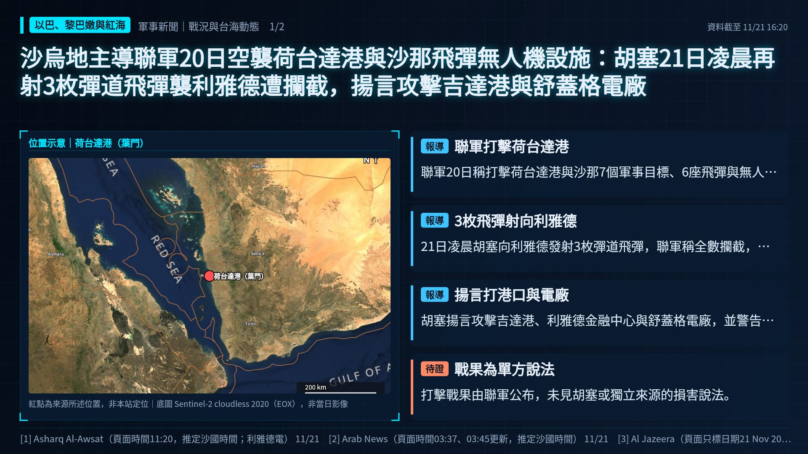
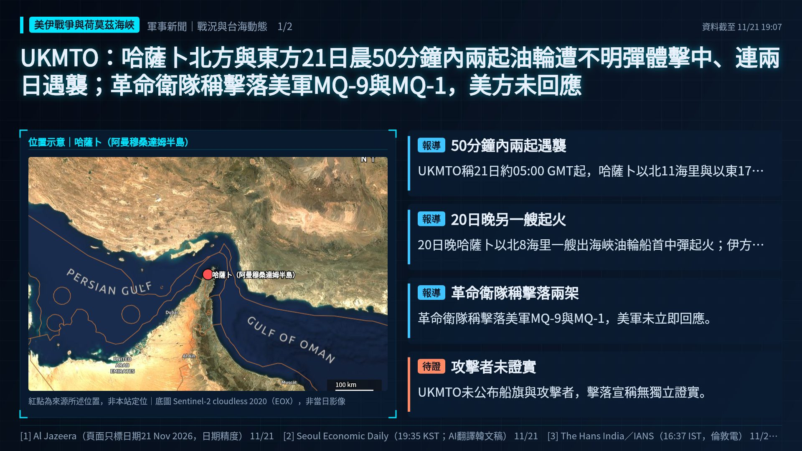
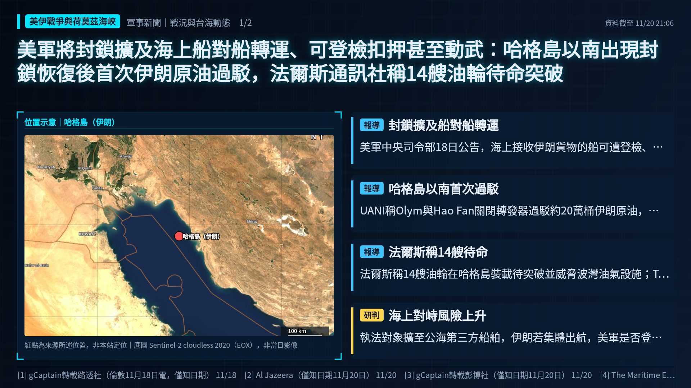
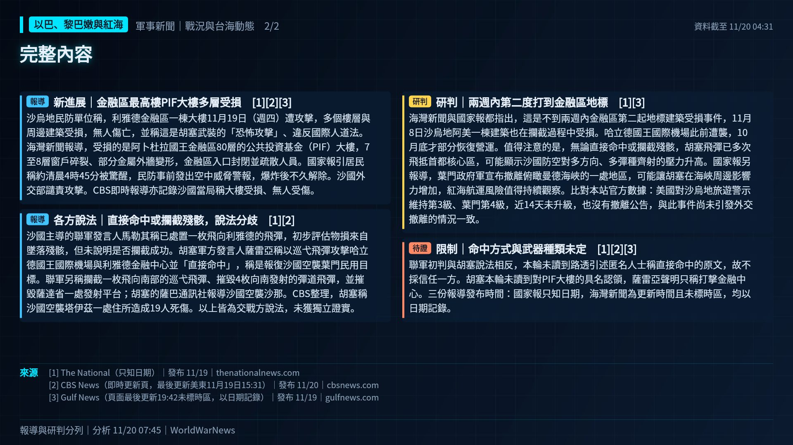
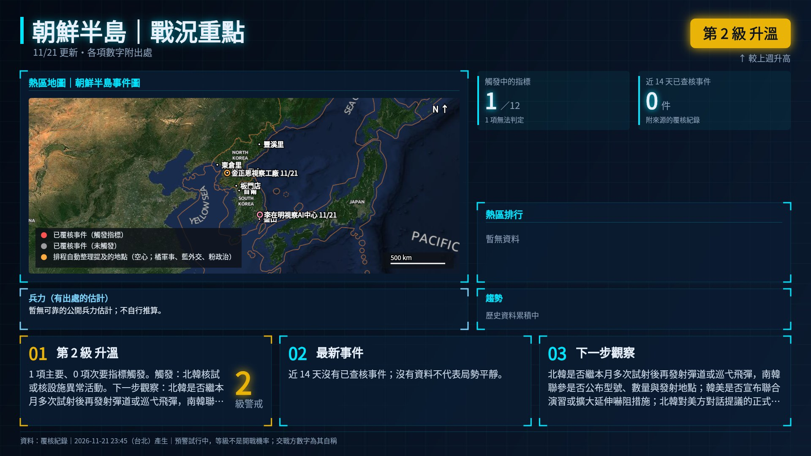
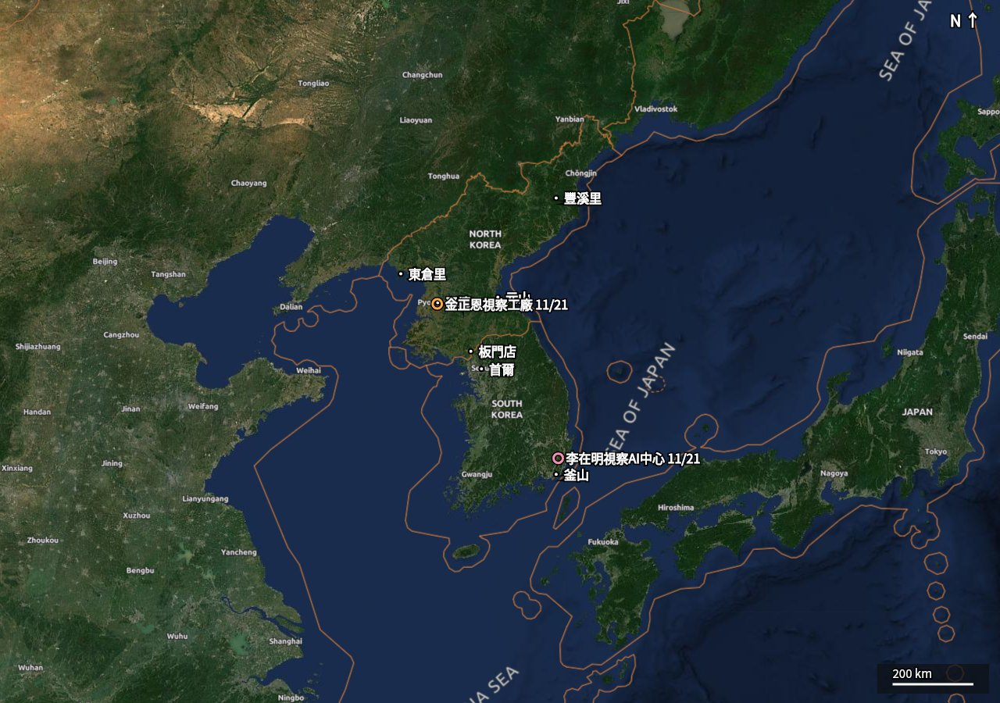
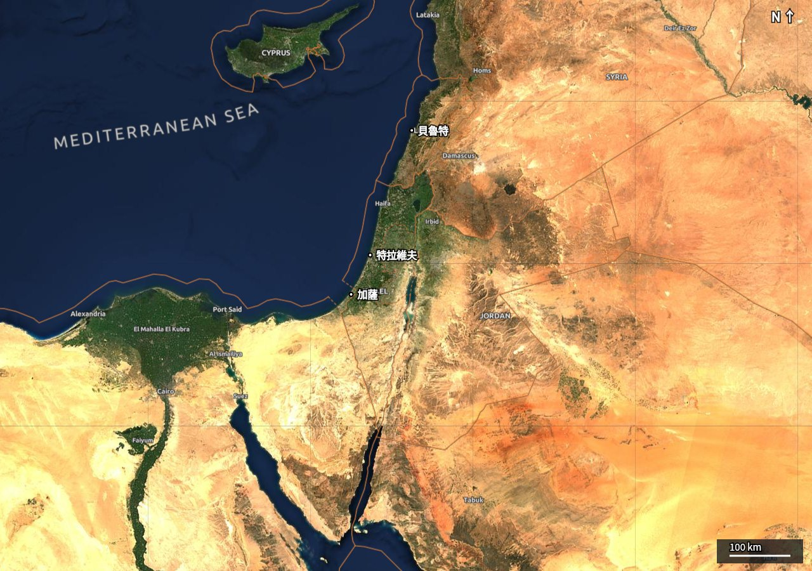
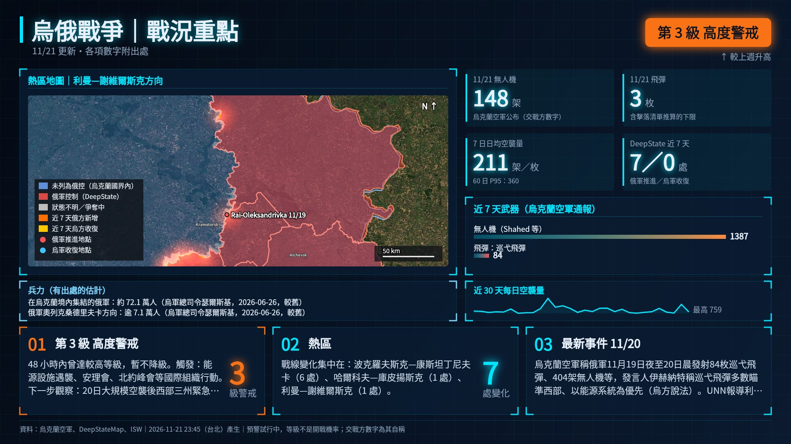

胡塞攻擊船隻
紅海與亞丁灣航運受威脅，會推高歐亞運費、保費與油價。
報導標題：Iran war sees tanker hit near Hormuz as Saudi Arabia intercepts Houthi missiles 來源 ↗
公開來源整理｜最後更新 2026-11-21 23:45（台北）｜每 3 小時更新，出事時加開
📌 11/21（六）每日摘要｜台海 3 級高度警戒：聯合戰備警巡｜美伊 2 級升溫：美軍打擊或攔截行動｜歐洲北約 2 級升溫：波蘭／羅馬尼亞／波羅的海國家領空遭侵犯｜烏俄 3 級高度警戒：能源設施遭打擊比例上升｜朝鮮半島 2 級升溫：北韓核試或核設施異常活動｜南海 1 級常態｜以巴紅海 3 級高度警戒：胡塞攻擊紅海／亞丁灣船隻。降溫訊號：台海、美伊、歐洲北約、烏俄。市場異常：台股加權指數 -6.2%。
已知項目未觸發（7/7 項有資料）
🕊️ 11/20 12 家媒體報導降溫訊號（通話、會談、停火）：APEC美中會談 川普稱不支持台獨
已知項目未觸發（4/4 項有資料）
已知項目未觸發（1/1 項有資料）
已知項目未觸發（5/5 項有資料）
已知項目未觸發（2/2 項有資料）
🕊️ 11/21 9 家媒體報導降溫訊號（通話、會談、停火）：Rep. Randy Fine to Newsmax: Trump Summit Could Help
已知項目未觸發（3/3 項有資料）
已知項目未觸發（1/1 項有資料）
已知項目未觸發（5/6 項有資料）
🕊️ 11/21 2 家媒體報導降溫訊號（通話、會談、停火）：Kushner floated NATO membership for Ukraine if it ce
已知項目未觸發（1/1 項有資料）
🕊️ 11/21 29 家媒體報導降溫訊號（通話、會談、停火）：Russia paints Putin's talks with Trump and Xi as a
已知項目未觸發（1/1 項有資料）
紅海與亞丁灣航運受威脅，會推高歐亞運費、保費與油價。
報導標題：Iran war sees tanker hit near Hormuz as Saudi Arabia intercepts Houthi missiles 來源 ↗
本站預警燈號升級。
報導標題：由第 1 級升至第 3 級「高度警戒」
北約國家為因應俄國攻擊而緊急升空或關閉機場，代表前線緊張升高。
報導標題：Nato jets scrambled after Russian missiles and drone hit Poland during attacks on Ukraine 來源 ↗
打擊黎巴嫩、敘利亞、伊拉克或葉門目標，衝突有擴大到多國的風險。
報導標題：Israel Escalates Bombardment across Lebanon while Maintaining Occupation 來源 ↗
俄國無人機或飛彈越界進入北約國家，北約需判斷是否回應。
報導標題：NATO Fighter Jets Scrambled in Response to Airspace Violations in Poland 來源 ↗
本站預警燈號升級。
報導標題：由第 2 級升至第 3 級「高度警戒」
俄國無人機或飛彈越界進入北約國家，北約需判斷是否回應。
報導標題：Poland verifies radar data after suspected airspace violation, army says 來源 ↗
衝突雙方通話、會談或停火協商，可能讓緊張暫緩（不會降低燈號）。
報導標題：Kushner floated NATO membership for Ukraine if it cedes Donbas to Russia in peace talks - report 來源 ↗
新一輪制裁或出口管制，反映外交施壓升級。
報導標題：Shafaq News..US sanctions four Iranians over alleged Iranian oil revenue collection 來源 ↗
新一輪制裁或出口管制，反映外交施壓升級。
報導標題：Russian Banks, Cryptocurrencies and Shadow Oil Fleet Targeted in New EU Sanctions Package Against Russia 來源 ↗
衝突雙方通話、會談或停火協商，可能讓緊張暫緩（不會降低燈號）。
報導標題：Rep. Randy Fine to Newsmax: Trump Summit Could Help End Iran, Ukraine Wars 來源 ↗
衝突雙方通話、會談或停火協商，可能讓緊張暫緩（不會降低燈號）。
報導標題：Russia paints Putin's talks with Trump and Xi as a watershed moment and a snub to Europe 來源 ↗
安理會表決、IAEA 報告或北約峰會等正式行動。
報導標題：France seeks UN Security Council meeting after Russian strikes hit European embassies in Kyiv 來源 ↗
歐洲各國增加國防預算、恢復徵兵或發放民防手冊，反映對俄威脅的評估升高。
報導標題：German students march against social spending cuts, military conscription plans 來源 ↗
歐洲各國增加國防預算、恢復徵兵或發放民防手冊，反映對俄威脅的評估升高。
報導標題：Monov in Brussels: Bulgaria plans gradual rise in defence spending 來源 ↗
歐洲各國增加國防預算、恢復徵兵或發放民防手冊，反映對俄威脅的評估升高。
報導標題：More than cash: EU defense spending push is ‘game-changer’ for industry, says arms boss 來源 ↗
歐洲各國增加國防預算、恢復徵兵或發放民防手冊，反映對俄威脅的評估升高。
報導標題：EU disburses another $1.88 billion to Ukraine for defense spending 來源 ↗
歐洲各國增加國防預算、恢復徵兵或發放民防手冊，反映對俄威脅的評估升高。
報導標題：Poland Is Strengthening Its Civil Defense in Response to the Threat from russia 來源 ↗
新一輪制裁或出口管制，反映外交施壓升級。
報導標題：Shafaq News..US sanctions four Iranians over alleged Iranian oil revenue collection 來源 ↗
衝突雙方通話、會談或停火協商，可能讓緊張暫緩（不會降低燈號）。
報導標題：Rep. Randy Fine to Newsmax: Trump Summit Could Help End Iran, Ukraine Wars 來源 ↗
另有 13 則，見時間軸
新一輪制裁或出口管制，反映外交施壓升級。
報導標題：Russian Banks, Cryptocurrencies and Shadow Oil Fleet Targeted in New EU Sanctions Package Against Russia 來源 ↗
衝突雙方通話、會談或停火協商，可能讓緊張暫緩（不會降低燈號）。
報導標題：Russia paints Putin's talks with Trump and Xi as a watershed moment and a snub to Europe 來源 ↗
北約國家為因應俄國攻擊而緊急升空或關閉機場，代表前線緊張升高。
報導標題：Nato jets scrambled after Russian missiles and drone hit Poland during attacks on Ukraine 來源 ↗
另有 13 則，見時間軸
核能力升級是朝鮮半島最嚴重的升級訊號之一，通常會引發安理會與美日韓的強烈回應。
報導標題：North Korea has expanded its uranium enrichment plant, the IAEA head says 來源 ↗
紅海與亞丁灣航運受威脅，會推高歐亞運費、保費與油價。
報導標題：Iran war sees tanker hit near Hormuz as Saudi Arabia intercepts Houthi missiles 來源 ↗
安理會表決、IAEA 報告或北約峰會等正式行動。
報導標題：West presses Iran at IAEA to let inspections resume at bombed nuclear sites 來源 ↗
安理會表決、IAEA 報告或北約峰會等正式行動。
報導標題：Iran says normal IAEA inspections impossible until US, Israeli threats end - state media 來源 ↗
衝突雙方通話、會談或停火協商，可能讓緊張暫緩（不會降低燈號）。
報導標題：Iran Attacks U.S. Military Radar System in Bahrain Despite Talks With Mediators 來源 ↗
另有 2 則，見時間軸
打擊黎巴嫩、敘利亞、伊拉克或葉門目標，衝突有擴大到多國的風險。
報導標題：Israel Escalates Bombardment across Lebanon while Maintaining Occupation 來源 ↗
打擊黎巴嫩、敘利亞、伊拉克或葉門目標，衝突有擴大到多國的風險。
報導標題：Israel strikes Hezbollah site in Lebanon's Beqaa Valley 來源 ↗
打擊黎巴嫩、敘利亞、伊拉克或葉門目標，衝突有擴大到多國的風險。
報導標題：Israeli air strike targets southern Lebanon's Qantara 來源 ↗
召集後備、延長役期或修改動員法，是開戰前最明確的準備動作之一。
報導標題：Avigdor Liberman chairs defense panel, admits Israel will not pass 'universal draft law' 來源 ↗
另有 4 則，見時間軸
衝突雙方通話、會談或停火協商，可能讓緊張暫緩（不會降低燈號）。
報導標題：Kushner floated NATO membership for Ukraine if it cedes Donbas to Russia in peace talks - report 來源 ↗
歐洲各國增加國防預算、恢復徵兵或發放民防手冊，反映對俄威脅的評估升高。
報導標題：German students march against social spending cuts, military conscription plans 來源 ↗
俄國無人機或飛彈越界進入北約國家，北約需判斷是否回應。
報導標題：NATO Fighter Jets Scrambled in Response to Airspace Violations in Poland 來源 ↗
安理會表決、IAEA 報告或北約峰會等正式行動。
報導標題：France seeks UN Security Council meeting after Russian strikes hit European embassies in Kyiv 來源 ↗
另有 11 則，見時間軸
依據：AEI／ISW｜本站自行整理，非全文翻譯
依據：SBS News、Korea Times（韓聯社）、Korea Times（韓聯社）、Korea Times（韓聯社）｜本站自行整理，非全文翻譯
依據：The Manila Times、Philstar、GMA News、The Manila Times｜本站自行整理，非全文翻譯
依據：ISW／CTP Iran Update｜本站自行整理，非全文翻譯
依據：ISW／CTP Iran Update｜本站自行整理，非全文翻譯
依據：Rzeczpospolita、Rzeczpospolita、Defence24、ISW／CTP｜本站自行整理，非全文翻譯
依據：ISW／CTP｜本站自行整理，非全文翻譯


克里維里赫市防衛委員會主席維爾庫爾稱，俄軍11月20日晚間以2枚彈道飛彈擊中市中心一家熱門餐廳的停車場一帶，救援人員趕到現場後，沙希德型無人機又攻擊同一區域，即所謂「二次打擊」（double-tap）。一名在餐廳遊樂區玩耍的7歲男童因頭部重傷送醫不治，一名20歲女性救護員罹難。第聶伯羅彼得羅夫斯克州長漢札通報的受傷人數在一夜間持續上修：基輔獨立報稿件更新為52傷、其中25人傷勢嚴重；聯合24媒體與基輔獨立報21日晨稿則稱至少58人受傷，含6名兒童與3名救護人員，28人住院、11人重傷。另有2名警方排爆人員與2名緊急救難署人員受傷。約23至25棟公寓、一所醫院、學校、商家與救護車受損，多區供水、瓦斯與電力中斷。
烏克蘭空軍21日晨通報，俄軍一夜發射3枚彈道飛彈（伊斯坎德爾-M／KN-23／S-400）與148架無人機，其中87架為噴射動力型；擊落或壓制117架無人機，全國19處有命中紀錄、9處落下殘骸。基輔獨立報彙整各州通報稱，過去一天全國至少2死83傷，哈爾科夫州索洛尼齊夫卡一棟五層樓遭無人機擊中、11人受傷。本站官方數據比對：烏方公布21日無人機148架、飛彈3枚，7日日均211架／枚，低於60日P95的360；前一天20日的大規模空襲（404架無人機與數十枚飛彈）已另稿報導。
澤倫斯基20日受訪時稱，俄軍正增加對烏克蘭城市的雙重甚至三重打擊；維爾庫爾指二次打擊瞄準「救援、醫護與公用事業人員」。這是烏方官員說法，俄方未就此次攻擊回應。值得注意的是，21日整體來襲數量明顯低於前一天，但單一城市傷亡卻相當集中，顯示傷亡規模未必與當夜來襲總量同步。克里維里赫是澤倫斯基家鄉，也是工業重鎮，過去曾多次遭彈道飛彈攻擊。本稿不推論俄方攻擊意圖，只記錄烏方說法與現場損害。
受傷人數在不同時點有47、52、58等說法，本稿以21日晨州政府與地方通報的至少58人為最新數字，後續仍可能變動。兩枚彈道飛彈的確切型號，以及餐廳附近是否有軍事目標，來源均未說明，也沒有獨立調查。基輔獨立報頁面時間未標時區，本稿依頁面日期與內容判斷事件發生於20日晚間當地時間。


據中東報（Asharq Al-Awsat）與半島電視台，沙烏地主導的「恢復葉門合法政府聯軍」發言人馬勒基少將11月20日（週五）宣布，聯軍對胡塞控制的紅海港口荷台達執行「特別行動」，打擊聯軍所稱用於走私與運送武器、彈道飛彈的港口作業能力，事前曾呼籲平民離開港區。聯軍並稱週五黎明在沙那摧毀7個軍事目標與6座製造彈道飛彈發射架結構與無人機的工坊，並癱瘓一處胡塞主要補給庫，針對沙那、薩達與塔伊茲省的打擊仍在進行。葉門政府為空襲辯護，指胡塞經該港接收走私的伊朗武器。以上目標性質與戰果為聯軍說法，胡塞方面的損害說法本輪未讀到。
阿拉伯新聞報導，沙國民防21日凌晨1時53分（當地時間）對利雅德發布「空中威脅」警報，馬勒基約2時後在X宣布防空攔截並摧毀胡塞射向利雅德的3枚彈道飛彈，目擊者稱首都傳出兩聲爆炸，報導未提及損害；民防同時對蘇萊伊勒、奈季蘭、吉贊與海米斯穆謝特發布預警。中東報引馬勒基另一聲明稱，一架飛向南部地區的胡塞無人機也遭摧毀。半島電視台稱這是利雅德連續第三天發布並迅速解除警報，週五起24小時內民防發出8次公開警報。阿拉伯新聞另稱，20日晚2枚射向吉贊的彈道飛彈遭攔截、殘骸落在舒蓋格一帶。胡塞在X稱正「打擊沙國各地目標，包括利雅德」。
半島電視台指出，胡塞揚言攻擊吉達等紅海港口、利雅德金融中心與西南部舒蓋格電廠，並警告航空公司沙國領空「不安全」；聯合國表示關切，警告持續交戰可能威脅葉門重要的援助補給路線。本站前稿已記錄19日利雅德公共投資基金大樓受損。值得注意的是，聯軍這次直接打擊荷台達港，而該港是葉門人道物資進口要道，這可能擴大民生衝擊；胡塞點名電廠與港口，也可能讓雙方的打擊目標從軍事設施擴及基礎設施。這是依來源所述威脅所做的推論，不代表雙方已實際攻擊這些設施。
荷台達與沙那的打擊目標、戰果均為聯軍公布，本輪沒有讀到胡塞或獨立機構的損害與傷亡說法；21日攔截的損害情形也僅有「未報導損害」。三份來源均未引述沙烏地通訊社原文。阿拉伯新聞與中東報頁面時間推定為沙國時間（UTC+3），半島電視台頁面只標日期。本站官方數據比對：美國對葉門旅遊警示維持第4級，近14天美英日台沒有新的升級或撤離公告；本戰區當天沒有其他與沙胡交火直接相關的量測數據。


據IANS與首爾經濟新聞引述英國海事貿易行動辦公室（UKMTO），11月21日約格林威治時間05:00，一艘駛出荷莫茲海峽的油輪在阿曼哈薩卜以北約11海里處船尾遭「不明彈體」擊中；約50分鐘後，哈薩卜以東約17海里處一艘油輪機艙遭攻擊，目前不清楚兩起是否為同一艘船。兩起均無人員受傷，是否造成污染尚待確認，UKMTO未公布船旗與攻擊者。首爾經濟新聞另引UKMTO稱，20日晚間約7時（時區未標明）一艘試圖出海峽的油輪在哈薩卜以北約8海里處左舷船首中彈起火。據首爾經濟新聞，革命衛隊透過官方媒體否認涉及彈體，稱該船是觸雷起火；IANS引伊朗陸軍海軍稱，一艘關閉導航系統、走「未經授權」航道的「違規」油輪觸雷起火。
半島電視台引伊朗國家廣播公司報導，革命衛隊稱21日以新型防空系統在荷莫茲海峽上空擊落一架MQ-9死神無人機，並稱是開戰以來第58架；稍後又稱在格什姆島上空擊落一架MQ-1，為第19次同類宣稱。美軍未立即回應，事件時間不明。伊朗外長阿拉格齊20日稱，伊方七項條件須落實荷莫茲才會重開，包括結束戰爭、解除制裁與南部港口的海上封鎖，並排除將60%濃縮鈾移往國外。川普20日在白宮稱伊朗想要協議，但不是他能接受的。美國財政部同日制裁4名被指管理非法石油收入的伊朗人，包括一名前革命衛隊情報官員。
首爾經濟新聞引彭博19日報導稱，本月荷莫茲油輪遇襲平均約每天一艘；IANS引新華社稱近幾週哈薩卜附近商船遇襲頻繁。值得注意的是，三起事件都發生在出海峽方向，且伊朗軍方以「觸雷」「違規航道」說法回應，與UKMTO描述的「不明彈體」不一致。這可能反映伊方試圖強制船隻走其指定航道，但目前沒有獨立證據可確認攻擊者或武器種類。本站官方數據比對：UKMTO近7天灣區船舶遇襲7件，低於60日P95的12件，最新一筆為21日UKMTO第215號通報，與本稿事件一致；布蘭特原油最近交易日僅漲0.6%。本站前稿已記錄美軍將封鎖擴及船對船過駁、伊朗醞釀油輪突破封鎖，本輪來源未見伊朗油輪實際突破的報導。
本輪未能直接讀取UKMTO官網（HTTP 403），事件細節依IANS與首爾經濟新聞轉述；首爾經濟新聞為AI翻譯韓文稿，措辭可能與原文不同。21日兩起是否同一艘船、20日晚事件的時區，均未確認。革命衛隊擊落MQ-9與MQ-1的宣稱、累計架數，以及半島電視台引述的美軍無人機損失數字，都沒有美方或獨立來源證實。


德國11月19日在柏林總理府主辦「自願聯盟」會議，德國總理梅爾茨、法國總統馬克宏、英國首相與澤倫斯基出席，美方特使庫許納與維特科夫與會。CNBC與基輔郵報報導，庫許納會後記者會稱，美方已讓俄方「對這個概念感到自在」：任何對烏安全保證都將以北約第5條為基礎；他稱俄方意圖是戰後「不再有另一場戰爭」，但也承認俄國內部仍有懷疑與不信任。庫許納稱川普對第5條式保證持開放態度，但必須符合美國利益、屬於更廣泛安全方案的一部分，並需有遵約監督與違約回應機制；他未說明保證如何運作。半島電視台報導，庫許納另稱川普希望「有歐洲在旁」達成協議，俄國同意歐洲上桌「對結束戰爭至關重要」。
澤倫斯基表示，柏林會上對第5條式保證的內涵沒有共同理解，並質疑是否意味美歐部隊進駐烏克蘭，稱「最重要的是各國對侵略如何反應」；基輔郵報引述他稱入北約仍是烏克蘭與歐洲最好的保證。馬克宏稱，鑑於俄方立場「極端」，必須重新討論烏克蘭加入北約，安全保證應先於領土談判。俄方說法方面，據bne IntelliNews引塔斯社，俄副外長里亞布科夫在聖彼得堡稱，任何讓基輔成為北約「準會員」的方案都不可接受，烏克蘭須先接受不入北約才能討論保證；普丁19日在深圳宣布邀請英法德（E3）赴莫斯科，里亞布科夫稱此行不代表與歐洲正式開談，克里姆林宮發言人培斯科夫稱「尚無確切日期」。基輔郵報稱梅爾茨提議下一輪四方談判可在阿聯舉行，地點未定。
值得注意的是，「俄方接受第5條式保證」目前只見於美方轉述，本輪未讀到克里姆林宮正面證實；俄方公開表態反而把「不入北約」列為前提，兩者可能指涉不同內容：美方談的是北約之外的雙邊或多邊承諾，俄方拒絕的是任何形式的準會員身分。邀E3赴莫斯科、但不接受歐盟另組的五方團隊，可能顯示俄方偏好與個別國家而非布魯塞爾打交道。保證的執行機制、是否涉及外國駐軍，仍是各方最大分歧，短期內不宜解讀為停火在即。
bne IntelliNews提到德法英烏另有聯合聲明（德國聯邦政府網站），本輪未讀到原文，不轉述其條文；E3訪莫斯科是否成行、日期與下一輪談判地點都未確定。本站官方數據顯示，烏方公布11月20日俄軍出動無人機404架、飛彈84枚，單夜飛彈數超過60日P95，外交接觸期間空襲並未降溫。半島電視台報導的會議出席名單以圖說為準，未另行核對。


路透社11月18日報導，美軍中央司令部當天發布航行公告：在海上以船對船方式，從受封鎖船舶接收伊朗裝載貨物的船隻，即使從未進入伊朗水域，也「可能被視為規避封鎖」，可遭攔停、登檢、改道、扣押，或被要求駛回貨物原裝港；不立即遵從合法命令者，可能面臨「符合適用法律的武力」執法。美國海軍中東司令部同日轉發的更新稱，封鎖不妨礙中立船舶經荷莫茲往返非伊朗目的地，但仍可能受臨檢。半島電視台指出，美方4月13日首度封鎖伊朗港口，6月因與德黑蘭達成諒解而解除，7月14日協議破局後恢復；截至20日刊出，伊朗官方未直接回應此公告。
gCaptain轉載彭博社報導，反核伊朗聯盟（UANI）依衛星影像與船舶追蹤資料指出，受美國制裁的蘇伊士型油輪Olym與未列黑名單的中型油輪Hao Fan，週二在波斯灣哈格島以南進行約20萬桶伊朗原油的船對船過駁，雙方關閉轉發器，Hao Fan並偽造位置顯示在阿曼附近，這是7月中恢復封鎖以來首次觀察到的過駁。海事執行者報導，兩船分別宣稱蓋亞那與尼加拉瓜船籍，該刊稱屬虛假登記。UANI顧問布朗研判，伊朗會嘗試「各種方式」把油運出。
海事執行者11月20日報導，與革命衛隊有關的法爾斯通訊社稱，14艘油輪已在哈格島裝載、配妥船員並升伊朗旗，並警告若出口受阻，將攻擊阿聯、沙烏地、卡達、科威特、阿曼與巴林油氣設施；油輪追蹤網站TankerTrackers先稱伊朗似在準備出口，後改稱「一廂情願，絕非如此」。Windward統計封鎖線一日航程內的阿拉伯海有31艘滿載受制裁油輪。報導引伊朗外長阿拉格齊稱「封鎖必須打破」。半島電視台另引革命衛隊發言人稱，美方「永遠無法」達成經濟封鎖，船隻若遭攻擊將「打得更重」。以上為伊方說法。
值得注意的是，公告把執法對象從駛離伊朗港口的船，擴大到在公海接駁的第三方船舶，執法地理範圍可能因此外擴。半島電視台引倫敦國王學院克里格稱，伊朗可繞過部分封鎖，但無法以軍事方式持續突破，並稱這可能是近幾週最危險的升級情境之一。彭博社報導的單次過駁量不大，UANI認為不足以構成經濟出口航次；若伊朗真以船隊集體出航，美軍是否登檢或動武，將是下一個觀察點。
14艘油輪船隊只有法爾斯單方說法，TankerTrackers已公開質疑；Windward統計日期報導未寫明。本站官方數據顯示，UKMTO近7天灣區船舶遇襲6件，低於60日P95的12件，最新為20日荷莫茲海峽#214通報，但UKMTO網站本輪回應403，未讀到該通報內容。美軍是否已依新公告實際攔停船舶，本輪未見報導。


烏克蘭空軍11月20日通報，俄軍自19日18時起至20日晨發射84枚Kh-101、口徑、伊斯坎德爾-K巡弋飛彈，另有伊斯坎德爾-M／S-400彈道飛彈與鋯石反艦飛彈，以及404架沙希德型、蓋爾貝拉與「Parodiya」誘餌無人機，其中123架為噴射動力沙希德。截至基輔時間10時30分，空軍稱擊落或壓制3枚彈道／鋯石飛彈、79枚巡弋飛彈與380架無人機，共462個目標；23處有命中紀錄、10處有殘骸墜落。發射區包括俄羅斯羅斯托夫、布良斯克、庫斯克、奧廖爾、沃洛格達州、克拉斯諾達爾邊疆區，以及被占的克里米亞與頓內茨克。空軍通報時攻擊仍在進行，鋯石飛彈未列發射數量。
基輔郵報與UNN引總理科列茨基稱全國8死28傷，其中基輔6死15傷；利沃夫當局稱2死；哈爾科夫一家急診醫院磁振造影大樓受損、4人受傷。基輔郵報稱基輔波季爾－沃斯克列先斯基、達爾尼茨基與南橋3座聶伯河橋梁受損，市長克里契科呼籲市民減少開車、企業讓員工遠距上班；一處污水處理設施也受損。利沃夫斯克尼利夫火車站售票處遭擊中。UNN稱利沃夫、外喀爾巴阡與伊凡諾－法蘭科夫斯克州實施緊急停電，鐵路也受損。空軍發言人伊赫納特稱巡弋飛彈多數瞄準西部、以能源系統為優先，彈道飛彈主要打基輔一帶，並稱是「最強烈的攻擊之一」。
本站數據顯示，烏方公布20日無人機404架、飛彈84枚，單夜飛彈數遠高於60日P95的7枚；7日日均203架／枚，仍低於60日P95的360，「飛彈與無人機超過P95」主要指標因單夜飛彈數而觸發。基輔郵報指出，普丁先前揚言在烏軍多次打擊克里米亞大橋後施以「痛苦得多」的打擊，伊赫納特週一也曾警告俄方準備再襲能源系統；時序上相符，但俄方是否明言此為報復，本稿未讀到俄方原文。值得注意的是，巡弋飛彈集中打西部能源、彈道飛彈打首都橋梁，可能意在同時削弱西部電網與基輔兩岸交通，這是本站推論。
歐洲新聞台引澤倫斯基稱俄軍發射逾400架無人機與逾110枚飛彈，高於空軍通報可計的84枚巡弋飛彈加3枚彈道飛彈，差異可能來自鋯石等未列數量的飛彈，尚待空軍完整數字。攔截與發射數字均為烏方公布，未經獨立核實。傷亡為科列茨基20日上午通報，攻擊當時仍在進行，可能再上修。跨入波蘭的飛彈與無人機另見本站歐洲安全稿。


沙烏地民防單位稱，利雅德金融區一棟大樓11月19日（週四）遭攻擊，多個樓層與周邊建築受損，無人傷亡，並稱這是胡塞武裝的「恐怖攻擊」、違反國際人道法。海灣新聞報導，受損的是阿卜杜拉國王金融區80層的公共投資基金（PIF）大樓，7至8層窗戶碎裂、部分金屬外牆變形，金融區入口封閉並疏散人員。國家報引居民稱約清晨4時45分被驚醒，民防事前發出空中威脅警報，爆炸後不久解除。沙國外交部譴責攻擊。CBS即時報導亦記錄沙國當局稱大樓受損、無人受傷。
沙國主導的聯軍發言人馬勒其稱已處置一枚飛向利雅德的飛彈，初步評估物損來自墜落殘骸，但未說明是否攔截成功。胡塞軍方發言人薩雷亞稱以巡弋飛彈攻擊哈立德國王國際機場與利雅德金融中心並「直接命中」，稱是報復沙國空襲葉門民用目標。聯軍另稱攔截一枚飛向南部的巡弋飛彈、摧毀4枚向南發射的彈道飛彈，並摧毀薩達省一處發射平台；胡塞的薩巴通訊社報導沙國空襲沙那。CBS整理，胡塞稱沙國空襲塔伊茲一處住所造成19人死傷。以上皆為交戰方說法，未獲獨立證實。
海灣新聞與國家報都指出，這是不到兩週內金融區第二起地標建築受損事件，11月8日沙烏地阿美一棟建築也在攔截過程中受損。哈立德國王國際機場此前遭襲，10月底才部分恢復營運。值得注意的是，無論直接命中或攔截殘骸，胡塞飛彈已多次飛抵首都核心區，可能顯示沙國防空對多方向、多彈種齊射的壓力升高。國家報另報導，葉門政府軍宣布撤離俯瞰曼德海峽的一處地區，可能讓胡塞在海峽周邊影響力增加，紅海航運風險值得持續觀察。比對本站官方數據：美國對沙烏地旅遊警示維持第3級、葉門第4級，近14天未升級，也沒有撤離公告，與此事件尚未引發外交撤離的情況一致。
聯軍初判與胡塞說法相反，本輪未讀到路透引述匿名人士稱直接命中的原文，故不採信任一方。胡塞本輪未讀到對PIF大樓的具名認領，薩雷亞聲明只稱打擊金融中心。三份報導發布時間：國家報只知日期，海灣新聞為更新時間且未標時區，均以日期記錄。
Taiwan’s Local Elections: The Races to Watch｜Brian Hioe
距 11 月 28 日投票剩一週，作者逐一盤點各縣市選情。台北市民進黨沈伯洋聲勢高漲（被稱為「黑潮」現象），即使落敗也可能是陳水扁之後民進黨在台北表現最好的候選人，蔣萬安的 2028 總統路因而受影響；台中市江啟臣被視為盧秀燕接班人，得票是否過六成將牽動盧的總統布局；高雄賴瑞隆知名度不足，柯志恩積極進攻；新北市蘇巧慧緊追李四川。文章也點出藍白在嘉義市、新竹市合作、在竹北破局，鄭麗文的黨內地位繫於選果，並提到國民黨大老提出的十年統一時程表引發爭議，黨中央已切割。作者結論是地方選舉主要看地方議題，但結果會決定 2028 的領跑人選。
對台灣的意義：地方選果會影響 2028 總統大選人選與藍白合作走向，也牽動兩岸路線辯論；十年統一時程爭議顯示兩岸議題仍可能干擾選情，值得觀察北京與美方如何解讀選果。
本站中文導讀，非全文翻譯｜已讀全文
What the Yalta Comparison Really Reveals About Shenzhen｜Beniamino Irdi
作者認為，美中俄深圳三方峰會的共同宣言內容空泛：聯合國改革、燃料供應與核風險對話都沒有具體內容，只有警告國際刑事法院一段較為明確；烏克蘭與伊朗都不在議程上。拿雅爾達會議對照，差異反而更有啟示：三位領導人各自處於弱勢，需要合影來展現實力；三國都是修正主義強權，視當前局勢為改善自身地位的中繼站；歐洲完全缺席，三方各以貿易、武力與意識形態壓迫歐洲。作者指出，三方真正的共通點是把主權視為強國不受約束的權利、偏好勢力範圍與雙邊交易，因此讓台北、基輔與東京擔心被越頂協商。
對台灣的意義：文章點出台北擔心三強越過當事方私下協議；三方都偏好勢力範圍與雙邊交易，這種思維若延伸到台海議題，台灣須留意在美中談判中被當作籌碼的風險。
本站中文導讀，非全文翻譯｜已讀全文
Congress and the Coming Crises｜Ivo H. Daalder, James M. Lindsay
作者認為民主黨贏得期中選舉靠的是生活成本議題，而油價、電價與利率問題都連結到伊朗戰爭、AI 資料中心與國債。伊朗戰爭消耗高價彈藥、把美國海軍困在阿拉伯海，加上盟友關係受損，北京與莫斯科可能把未來兩年視為機會之窗，例如中國封鎖台灣、俄羅斯試探波羅的海國家。作者主張新國會應援引戰爭權力決議與預算權逼白宮結束伊朗戰爭、修法讓國會可推翻對俄制裁豁免、恢復援烏，並在國防撥款法案中加速對台軍售、把「六項保證」入法，同時以聽證會檢討戰爭暴露的弱點並規範 AI 產業。
對台灣的意義：兩位前官員明確建議國會加速對台軍售、將六項保證法制化，並檢視美國因應中國脅迫台灣的準備；若獲兩黨支持，可能成為川普政府對中讓步的制衡力量。
本站中文導讀，非全文翻譯｜僅讀公開段落
| 日期 | 共機架次 |
|---|---|
| 11/21 | 2 |
| 11/20 | 8 |
| 11/19 | 1 |
| 11/18 | 9 |
| 11/17 | 5 |
| 11/16 | 4 |
| 11/15 | 1 |
| 11/14 | 10 |
| 11/13 | 30 |
| 11/12 | 7 |
| 11/11 | 4 |
| 11/10 | 4 |
| 11/9 | 1 |
| 11/8 | 4 |
| 11/7 | 11 |
| 11/6 | 3 |
| 11/5 | 21 |
| 11/4 | 22 |
| 11/3 | 49 |
| 11/2 | 19 |
| 11/1 | 32 |
| 10/31 | 13 |
| 10/30 | 6 |
| 10/29 | 6 |
| 10/28 | 6 |
| 10/27 | 3 |
| 10/26 | 3 |
| 10/21 | 29 |
| 10/20 | 14 |
| 10/19 | 5 |
虛線為過去 60 天的第 95 百分位，超過即觸發預警指標；單日偏高常見於聯合戰備警巡，不代表戰爭即將發生。


國防部 11/21 通報（前 24 小時）：共機 2 架次（逾越中線及進入空域 2 架次）、共艦 6 艘、公務船 1 艘。國防部未公布共機精確位置，圖上不標航跡。日本統合幕僚監部近 7 天公布中國艦艇／軍機動向 3 則。雷達衛星（Global Fishing Watch）最近過境：金門周邊 46 艘（未開 AIS 13）、馬祖周邊 59 艘（未開 AIS 15）、澎湖周邊 17 艘（未開 AIS 3）、海峽中段 106 艘。預警第 3 級 高度警戒，觸發：聯合戰備警巡、政府發布防空、飛彈或國家級實際告警、台股、台積電或新台幣單日異常下跌，或外資單日淨賣超異常等。


預警第 2 級 升溫，觸發：北韓核試或核設施異常活動。近 14 天沒有附座標的已覆核事件；圖上空心點是排程自動整理提及的地點，不是查核過的事件位置。


UKMTO 通報（台北時間）：近 30 天波灣／荷莫茲／阿曼灣船舶遇襲 30 件，近 7 天 8 件；最新為 11/21 Strait of Hormuz（UKMTO #216）。預警第 2 級 升溫，觸發：美軍打擊、伊朗報復鄰國、海上封鎖持續等。近期事件：11/19 華盛頓號離開中東後，美軍仍以布希號與羅斯福號兩艘航艦，搭配十餘艘驅逐艦、巡洋艦與…；11/18 11月18日凌晨（僅知日期與「清晨」，無確切時刻）伊朗軍方經國營電視台與法爾斯社…；11/18 一名未具名美軍官員11月17日向CBS、ABC等媒體證實，美軍戰機以精確彈藥打擊…。


預警第 2 級 升溫，觸發：領空遭侵犯、軍方應變升級。近 14 天沒有附座標的已覆核事件；圖上空心點是排程自動整理提及的地點，不是查核過的事件位置。


預警第 3 級 高度警戒，觸發：胡塞攻擊紅海／亞丁灣船隻、以色列對黎巴嫩、敘利亞、伊拉克或葉門空襲、安理會表決、緊急會議等國際組織行動。研究稿（11/21）：據中東報（Asharq Al-Awsat）與半島電視台，沙烏地主導的「恢復葉門合法政府聯軍」發言人馬勒基少將11月20日（週五）宣布，聯軍對胡塞控制的紅海港口荷台達執行「特別行動」，打擊聯軍所稱用於走私與運送武器、彈道飛…近 14 天沒有附座標的已覆核事件，圖上只標地名；沒有資料不代表局勢平靜。


預警第 1 級 常態。近 14 天沒有附座標的已覆核事件；圖上空心點是排程自動整理提及的地點，不是查核過的事件位置。


11/13→11/21 DeepState 全線更新：俄軍推進 7 處（Rusyn Yar、Vilne、Petropavlivka、Vasylivka等），烏軍收復 0 處。本圖範圍控制區比較：俄方新增約 27 km²、烏方收復約 0 km²（像素估算）。烏克蘭空軍通報 11/21 無人機 148、飛彈 3（烏方數字）。預警第 3 級 高度警戒，觸發：能源設施遇襲、安理會、北約峰會等國際組織行動。
11/21 烏克蘭空軍通報：無人機 148 架、飛彈 3 枚；7 日日均 211（交戰方公布數字）。
戰場圖控制區資料：DeepStateMap.live（烏克蘭團隊依公開資料整理，非獨立證實；依其授權附出處使用）。另可對照 ISW 每日評估。

交戰方數字為其自稱。「政府投降」「國家戰敗」一類訊息一律是假訊息。本站為個人整理，非官方資訊。